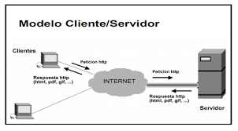

Cliente/Servidor
La arquitectura cliente-servidor es una de las más populares en la construcción de aplicaciones en la actualidad. Básicamente se llama así a toda arquitectura en la que participan dos componentes: uno es el cliente que utiliza unos servicios, y otro es el servidor que proporciona esos servicios. Entre ambos se tiene que efectuar una comunicación de red, habitualmente mediante Internet.
La clasificación de los lenguajes de programación desde el punto de vista cliente/Servidor es adecuada para cuando sea necesaria la programación de aplicaciones Cliente/Servidor en la que por una parte habrá una aplicación encargada de servir las peticiones procedentes de aplicaciones clientes. Un ejemplo de este tipo de arquitectura Cliente/Servidor lo tenemos en la mayoría de aplicaciones web en las que un programa servidor, ubicado en un servidor web, tendrá la función de servir las peticiones de cada una de las aplicaciones web clientes que se ejecuten desde cada uno de los navegadores web.
 |
 |  |